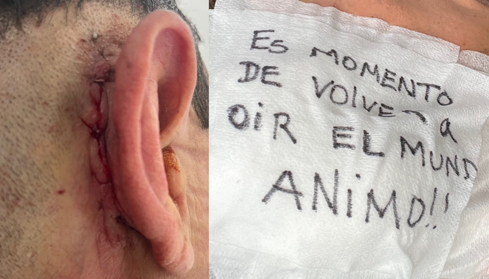

¿Cómo es tener un implante coclear?
El 2 de octubre van a activarme el implante coclear que tengo instalado en mi cabeza desde hace unos días. Es un aparato electrónico que sustituye al oído humano. Fue un proceso que empecé en mayo de este año y que sorpresivamente ha sido muy rápido.
Por qué necesito un implante
Tengo otoesclerosis, una enfermedad que hace perder la audición poco a poco. Esto sucede porque los huesos del oído medio: martillo, yunque y estribo, dejan de transmitir el sonido.
La audición empieza en el tímpano, que es una especie de tambor muy sensible a las vibraciones del sonido. El tímpano está conectado a los huesos del oído medio que transmiten la vibración hasta la entrada de la cóclea: un hueso en forma de caracol lleno de células ciliadas. Estas células se mueven y convierten la vibración en impulsos nerviosos que llegan al cerebro por medio del nervio auditivo.

Como la otoesclerosis afecta la transmisión mecánica del sonido, la audición se puede restaurar con una cirugía en la que reemplazan el hueso del estribo por una prótesis de titanio que recupera el movimiento. Sin embargo, en mi caso esta solución no es posible, porque el tipo de otoesclerosis que tengo también afecta al hueso de la cóclea. Al dañarse el hueso también se dañan las células encargadas de convertir las ondas sonoras en impulsos nerviosos. Es decir, mi problema no solo es mecánico sino neurológico y, como la mayoría de los problemas del sistema nervioso, no tiene cura.
Me di cuenta de que ya no escuchaba bien a los 22 años y a los 30 empecé a usar audífonos para la hipoacusia. Con los audífonos pude llevar una vida más o menos similar a la anterior por unos diez años, pero mi sordera siguió empeorando. Durante los últimos años se han acumulado las situaciones en las que ya no puedo escuchar con los audífonos: primero dejé de entender en las clases o charlas, luego dejé de entender en las reuniones si hay mucha gente hablando, y ahora simplemente no puedo entender lo que dicen algunas personas, por más que me esfuerce.
Los implantes cocleares
Desde hace tiempo tengo claro que mi enfermedad avanza y voy a quedarme totalmente sordo. Afortunadamente, hoy en día la mayoría de sordos pueden oír gracias a los implantes cocleares. Es una tecnología asombrosa pero imperfecta, pues lo que se oye es diferente a la audición natural. Es difícil saber con seguridad cómo se escucha con un implante coclear, pero en la mayoría de las simulaciones que hay en Internet todo suena robotizado. Por esa razón, siempre quise demorar lo más posible el momento de tener que usarlo.
Este año, buscando alternativas para escuchar mejor, consulté con un audiólogo que me recomendó ponerme el implante. Al principio me pareció una locura, porque mi audición todavía se parece a la normal pese al deterioro, lo que tiene muchas ventajas. Por ejemplo, todavía puedo escuchar y disfrutar la música. Claro, ya perdí las sutilezas y no puedo distinguir la diferencia entre unos parlantes sofisticados y unos básicos, pero aún la música que oigo suena igual a como la recuerdo. La calidad no es muy buena, pero es más que suficiente: se parece a escuchar música en la casetera portátil que tenía cuando niño. Con el implante coclear la música simplemente ya no va a sonar a música.
Sin embargo, como la prioridad es comunicarme mejor, poco a poco me fui convenciendo de ponerme el implante coclear. Al investigar sobre el tema me enteré de algunas cosas que no sabía:
La tecnología ha avanzado mucho, por lo que ahora el criterio para recomendar un implante coclear es más amplio. Ya no solo se recomienda a personas con sordera profunda, sino a personas que aún pueden escuchar pero tienen muchas dificultades para entender el habla incluso usando audífonos.
La cirugía puede preservar los restos auditivos, es decir que en teoría es posible aprovechar lo que queda de audición y ayudarse con el implante coclear para escuchar las frecuencias sonoras “muertas”. Esto es importante, porque el avance de la sordera generalmente no es uniforme sino que se pierden las frecuencias agudas primero.
La capacidad de entender el habla con un implante varía mucho de persona a persona. En general, funciona mejor en quienes llevan poco tiempo sin oír, por lo que es recomendable no dejar que la audición empeore demasiado.
Una vez tomada la decisión, el primer paso fue hacerme unos exámenes para verificar que cumpliera los requisitos para ponerme el implante. Me hicieron una resonancia magnética para revisar el estado de mi cóclea y una logoaudiometría con audífonos y sin audífonos para ver qué tantas palabras estoy entiendo con cada oído. El objetivo de ese examen es verificar cuál es el oído que tengo en peor estado, para hacer la cirugía de ese lado.
Luego de revisar los exámenes iniciamos el trámite de solicitar el implante coclear al seguro médico. Aquí estaba preparado para una lucha larga. Después de vivir con hipoacusia por muchos años sé que cualquier procedimiento médico costoso implica radicar papeles y cartas con solicitudes y quejas. Además, como los últimos años han sido caóticos para el sistema de salud de Colombia, estaba esperando lo peor. Sin embargo, las demoras más grandes fueron la programación de las citas médicas y exámenes diagnósticos. La autorización estuvo aprobada en poco más de un mes y después de enviársela al médico me programaron la cirugía para la siguiente semana.
La cirugía
El 15 de septiembre fue la cirugía. El implante consiste en un cable con una serie de electrodos que ponen dentro de la cóclea. El cable va unido a una antena receptora con forma de moneda, que va debajo de la piel, cerca de la oreja. Esta antena que implantan en la cirugía sirve para conectar después un procesador de sonido externo parecido a los audífonos BTE. La antena del implante tiene un imán que se pega a este aparato, que tiene la función de convertir el sonido en impulsos eléctricos. Se parece un poco a los cargadores inalámbricos para el celular.

La cirugía tardó unas dos horas, y luego estuve una hora más en observación. Ingresé al mediodía y a las 5 de la tarde estaba listo para ir a casa. Salí caminando normalmente, lo único que hacía evidente que estuve en una clínica eran las vendas sobre mi oreja derecha. Mi cirujano, un tipo entusiasta, más joven que yo, que sabe hacer escuchar a los niños sordos (como en los videos de Internet), dejó escrito un mensaje sobre la venda.
Al llegar a casa, me di cuenta que quedé con el sentido del gusto alterado. Siento que con la mitad derecha de la boca las cosas no saben a nada. También pasa que a veces se activa una especie de modo aleatorio: por ejemplo, la crema de dientes me sabe a sal. El desajuste es porque el chorda tympani, una parte del nervio facial, quedó lastimado después de la cirugía. Si todo va bien, en unas semanas debo volver a la normalidad.
No estoy escuchando nada por mi oído derecho, pero siento las vibraciones al percutir con los dedos la piel de la cara o la oreja. También, a veces, escucho unos ruidos metálicos, sobre todo al hablar.

Tres días después me quitaron los vendajes. La oreja se ve hinchada y tiene un remiendo en la parte de atrás. Está inclinada hacia un lado, como si se estuviera cayendo, pero al cicatrizar la incisión debe volver a su posición normal. Todavía no he entendido en qué lugar quedó la antena del implante, no la he podido ver bajo la piel. El doctor dijo que voy a escuchar muy bien, que durante la cirugía pudo monitorear la respuesta de los electrodos y el pronóstico es muy bueno. Le contamos al doctor que a veces sentía ruidos por el oído derecho, pero me hizo la prueba de diapasones y no escuché nada. Todo parece indicar que ya no tengo restos de audición en ese oído. Después de terminar las revisiones, me dieron la cita para activar el implante.
Dentro de unos días sabré cómo se escucha con un implante coclear. Han sido muy insistentes en que es importante llevar encendido el implante todo el tiempo y asistir disciplinadamente a las terapias. Al parecer, es como aprender a escuchar otra vez.